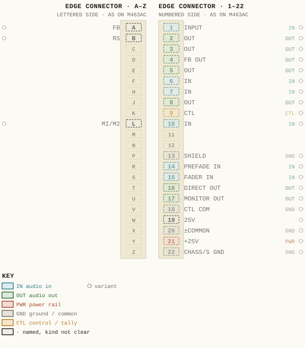
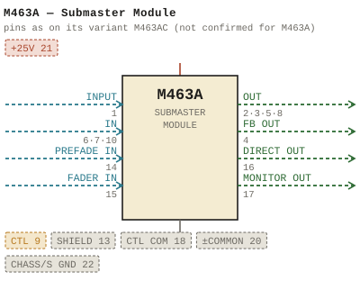

M463A — Submaster Module
| Type | module |
| Category | SUMMING |
| Try it | simulator & front panel |
| Earliest dated evidence | 1972|5 — estimate from a dated variant |
| Evidence | from M463 |
| Confidence | family |
| Variants | M463, M463AB, M463AC, M463B, M463J, M463K, M463L, M463LA |
| Folder | Modules/SUMMING/M463A |
Connections
What it is made of and what it is part of.
Pictures


M463A.pinout.svg

M463A.connections.svg 1972 - M463A - 001.jpg
1972 - M463A - 001.jpg 1972 - M463A - 002.jpg
1972 - M463A - 002.jpg 1972 - M463A - 003.jpg
1972 - M463A - 003.jpg 1972 - M463A - 004.jpg
1972 - M463A - 004.jpg 1972 - M463A - 005.jpg
1972 - M463A - 005.jpg 1972 - M463A - 006.jpg
1972 - M463A - 006.jpg 1972 - M463A - 007.jpg
1972 - M463A - 007.jpg 1972 - M463A - 008.jpg
1972 - M463A - 008.jpg 1972 - M463A - Submaster Module.jpg
1972 - M463A - Submaster Module.jpg 1972 - M463A - wbsps - module - m463a submaster module 001.jpg
1972 - M463A - wbsps - module - m463a submaster module 001.jpg 1972 - M463A - wbsps - module - m463a submaster module 001_small.jpg
1972 - M463A - wbsps - module - m463a submaster module 001_small.jpg 1972 - M463A - wbsps - module - m463a submaster module 002_small.jpg
1972 - M463A - wbsps - module - m463a submaster module 002_small.jpg M463AB - P002.jpg
M463AB - P002.jpg 1974 - M463LA - P024 - 6-3.jpg
1974 - M463LA - P024 - 6-3.jpg 1986 - M463AB - P002.jpg
1986 - M463AB - P002.jpgPrice history
| Year | Kind | Price | Listed as | Effective | Source |
|---|---|---|---|---|---|
| 2005|38 | used market value | 100.00 | M463A Sub master | wbsps - website ARCHIVE/WBSPS 2008/ARCHIVE/old website/PriceGuide.htm | |
| 2006|39 | used market value | 100.00 | M463A Sub master | wbsps - website ARCHIVE/WBSPS 2008/ARCHIVE/jan 2006 shell/priceguide.htm |
Pinout & connections
No page of its own numbers M463A's contacts: these are its variant M463AC's, drawn faded — not confirmed for M463A.
pinout (SVG) · connections (SVG) · pins (JSON)
Pin evidence — 23 contacts
| Pin | Signal | Kind | Confidence | Read from | Source |
|---|---|---|---|---|---|
| A | FB | named, kind not clear | variant | drawing rows | 1986 - M463AC - 463-04-009 - CONNECTOR REAR V…, p. 1 “row 1 of the drawing, left of the pin column” |
| 1 | INPUT | audio in | variant | drawing rows | 1986 - M463AC - 463-04-009 - CONNECTOR REAR V…, p. 1 “row 1 of the drawing, right of the pin column” |
| B | RS | named, kind not clear | variant | drawing rows | 1986 - M463AC - 463-04-009 - CONNECTOR REAR V…, p. 1 “row 2 of the drawing, left of the pin column” |
| 2 | OUT | audio out | variant | drawing rows | 1986 - M463AC - 463-04-009 - CONNECTOR REAR V…, p. 1 “row 2 of the drawing, right of the pin column” |
| 3 | OUT | audio out | variant | drawing rows | 1986 - M463AC - 463-04-009 - CONNECTOR REAR V…, p. 1 “row 3 of the drawing, right of the pin column” |
| 4 | FB OUT | audio out | variant | drawing rows | 1986 - M463AC - 463-04-009 - CONNECTOR REAR V…, p. 1 “row 4 of the drawing, right of the pin column” |
| 5 | OUT | audio out | variant | drawing rows | 1986 - M463AC - 463-04-009 - CONNECTOR REAR V…, p. 1 “row 5 of the drawing, right of the pin column” |
| 6 | IN | audio in | variant | drawing rows | 1986 - M463AC - 463-04-009 - CONNECTOR REAR V…, p. 1 “row 6 of the drawing, right of the pin column” |
| 7 | IN | audio in | variant | drawing rows | 1986 - M463AC - 463-04-009 - CONNECTOR REAR V…, p. 1 “row 7 of the drawing, right of the pin column” |
| 8 | OUT | audio out | variant | drawing rows | 1986 - M463AC - 463-04-009 - CONNECTOR REAR V…, p. 1 “row 8 of the drawing, right of the pin column” |
| 9 | CTL | control / tally | variant | drawing rows | 1986 - M463AC - 463-04-009 - CONNECTOR REAR V…, p. 1 “row 9 of the drawing, right of the pin column” |
| L | MI/M2 | named, kind not clear | variant | drawing rows | 1986 - M463AC - 463-04-009 - CONNECTOR REAR V…, p. 1 “row 10 of the drawing, left of the pin column” |
| 10 | IN | audio in | variant | drawing rows | 1986 - M463AC - 463-04-009 - CONNECTOR REAR V…, p. 1 “row 10 of the drawing, right of the pin column” |
| 13 | SHIELD | ground / common | variant | drawing rows | 1986 - M463AC - 463-04-009 - CONNECTOR REAR V…, p. 1 “row 13 of the drawing, right of the pin column” |
| 14 | PREFADE IN | audio in | variant | drawing rows | 1986 - M463AC - 463-04-009 - CONNECTOR REAR V…, p. 1 “row 14 of the drawing, right of the pin column” |
| 15 | FADER IN | audio in | variant | drawing rows | 1986 - M463AC - 463-04-009 - CONNECTOR REAR V…, p. 1 “row 15 of the drawing, right of the pin column” |
| 16 | DIRECT OUT | audio out | variant | drawing rows | 1986 - M463AC - 463-04-009 - CONNECTOR REAR V…, p. 1 “row 16 of the drawing, right of the pin column” |
| 17 | MONITOR OUT | audio out | variant | drawing rows | 1986 - M463AC - 463-04-009 - CONNECTOR REAR V…, p. 1 “row 17 of the drawing, right of the pin column” |
| 18 | CTL COM | ground / common | variant | drawing rows | 1986 - M463AC - 463-04-009 - CONNECTOR REAR V…, p. 1 “row 18 of the drawing, right of the pin column” |
| 19 | 25V | named, kind not clear | variant | drawing rows | 1986 - M463AC - 463-04-009 - CONNECTOR REAR V…, p. 1 “row 19 of the drawing, right of the pin column” |
| 20 | ±COMMON | ground / common | variant | drawing rows | 1986 - M463AC - 463-04-009 - CONNECTOR REAR V…, p. 1 “row 20 of the drawing, right of the pin column” |
| 21 | +25V | power rail | variant | drawing rows | 1986 - M463AC - 463-04-009 - CONNECTOR REAR V…, p. 1 “row 21 of the drawing, right of the pin column” |
| 22 | CHASS/S GND | ground / common | variant | drawing rows | 1986 - M463AC - 463-04-009 - CONNECTOR REAR V…, p. 1 “row 22 of the drawing, right of the pin column” |

Physical manual inventory
| Item | Location | Status | Scanned |
|---|---|---|---|
| M463AC - Master Module | DUPLICATE | PDF - Already scanned | |
| M463AB - Submaster Module | DUPLICATE | SCANNED BUT NEEDS STICHING | |
| M463AC - Master Module | DUPLICATE | SCANNED BUT NEEDS STICHING | |
| M463AB - Submaster Module | PDF - Already scanned |
Photos & scans (12)
| Year | File | |
|---|---|---|
| 1972|5 | 1972 - M463A - 001.jpg | note |
| 1972|5 | 1972 - M463A - 002.jpg | note |
| 1972|5 | 1972 - M463A - 003.jpg | note |
| 1972|5 | 1972 - M463A - 004.jpg | note |
| 1972|5 | 1972 - M463A - 005.jpg | note |
| 1972|5 | 1972 - M463A - 006.jpg | note |
| 1972|5 | 1972 - M463A - 007.jpg | note |
| 1972|5 | 1972 - M463A - 008.jpg | note |
| 1972|5 | 1972 - M463A - Submaster Module.jpg | note |
| 1972|5 | 1972 - M463A - wbsps - module - m463a submaster module 001.jpg | note |
| 1972|5 | 1972 - M463A - wbsps - module - m463a submaster module 001_small.jpg | note |
| 1972|5 | 1972 - M463A - wbsps - module - m463a submaster module 002_small.jpg | note |


Named in other drawings & documents (5)
| File | Page |
|---|---|
| M463AB - P002.jpg | 1 |
| 19xx - RTO-144 - Module RTO-144 Jumper calculator.xlsx | 1 |
| 1974 - M463LA - P024 - 6-3.jpg | 1 |
| 1986 - M463AB - P002.jpg | 1 |
| 1986 - M463AB - Submaster Module (2).pdf | 5 |